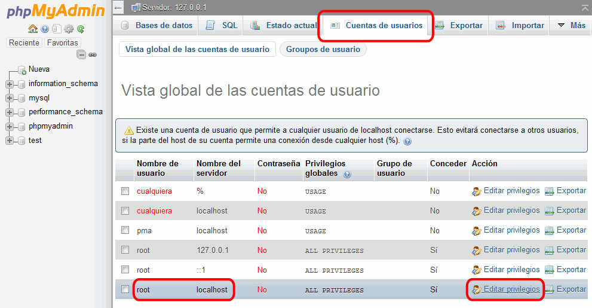
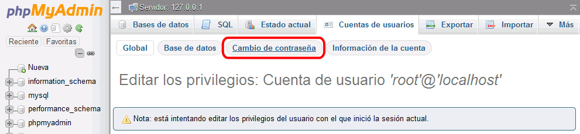
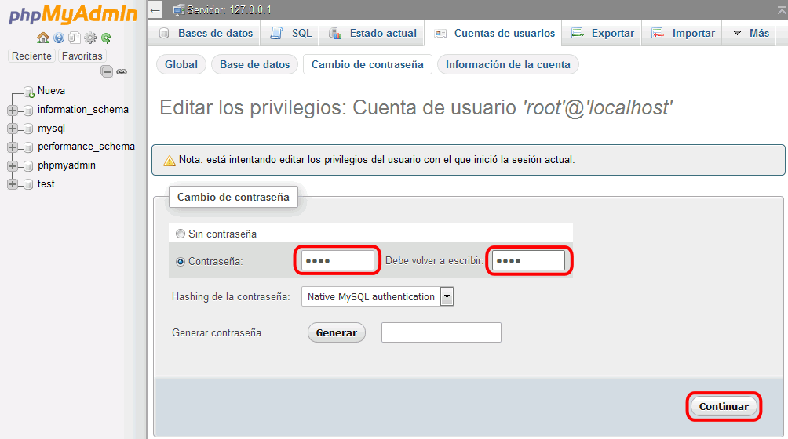
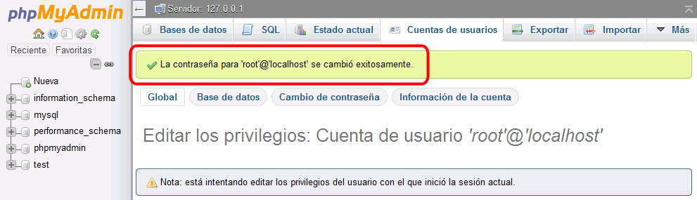
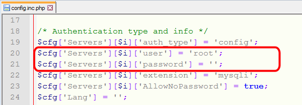
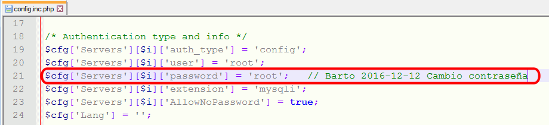
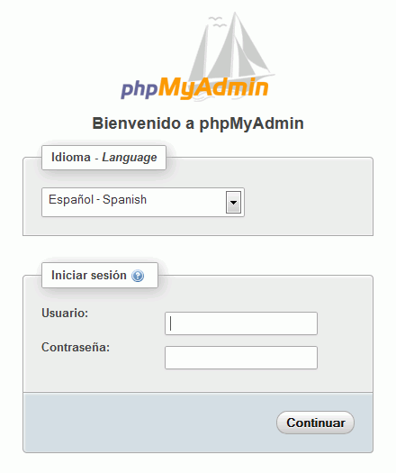

Estas soluciones están pendientes de actualizar a los ejercicios propuestos en el curso 2016/17.
Estas soluciones están pendientes de actualizar a los ejercicios propuestos en el curso 2016/17.
En esta lección se proponen soluciones detalladas de los ejercicios (1) de phpMyAdmin. Se recomienda intentar realizarlos primero sin recurrir a estas soluciones.






La página web de phpMyAdmin es https://www.phpmyadmin.net/.
La página web de descarga de phpMyAdmin es https://www.phpmyadmin.net/downloads/.
En cdlibre.org hay una sección dedicada a Bases de datos > MySQL, con información detallada sobre la última versión publicada de phpMyAdmin (entre otros).
Las versiones phpMyAdmin 4.6.3, publicada el 23 de junio de 2016, y phpMyAdmin 4.6.4, publicada el 16 de agosto de 2016 y utilizadas para elaborar estos ejercicios, se puede descargar de la web de phpMyAdmin: phpMyAdmin 4.6.3 (23/06/16) y phpMyAdmin 4.6.4 (16/08/16).
Si las versiones phpMyAdmin 4.6.3 y phpMyAdmin 4.6.4 no se encuentran o ya no están disponible en la web del programa, puede descargarla desde la página de Descarga de aplicaciones. Se recomienda esa versión ya que estos ejercicios se han preparado para ella.
 Por escribir
Por escribir
Descomprima el archivo descargado en una carpeta accesible desde el servidor local.
En estos ejercicios, de acuerdo con las recomendaciones de configuración general de estos apuntes, se supondrá que:
Mis documentos > IAW Nombre-de-alumno > Aplicaciones >phpmyadmin
http://localhost/nombre-de-alumno/webapps/phpmyadmin/index.php
La página de inicio de phpMyAdmin es el fichero index.php.
Ejecute el fichero index.php desde Eclipse. Se abrirá en el navegador la página de inicio de phpMyAdmin, que solicita un nombre usuario y contraseña para poder acceder a MySQL:

 Por escribir
Por escribir
/* config.inc.php */
$cfg['Servers'][$i]['AllowNoPassword'] = true;
 Por escribir
Por escribir